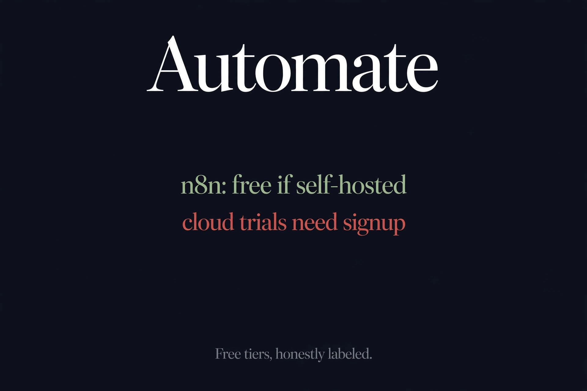

Best Free AI Automation Tools, Free Tiers Honestly Labeled (2026)
Quick answer: We checked the free tiers of n8n, Make.com, and Zapier in October 2026. Make.com has the most generous permanent free plan (1,000 credits/month, AI agents included). n8n's cloud is trial-only — the truly free path is self-hosting its Community Edition. Zapier gives 100 tasks plus 400 agent activities monthly. All three need an account to build.

| n8n | Make.com | Zapier | |
|---|---|---|---|
| Free tier | Trial only (cloud) / Free (self-hosted) | Yes — permanent | Yes — two free tiers |
| Free limits | Trial: 1,000 executions, 14 days | 1,000 credits/mo, 2 scenarios | 100 tasks/mo + 400 agent activities/mo |
| Account needed? | Yes (cloud) / No (self-host) | Yes to build | Yes to build |
| Credit card for free? | No | No | No |
| AI agents on free | 100 AI credits (trial) | Make AI Agents (Beta) included | Agents Free tier included |
n8n: the free version lives on your own server
Here's the thing most "free n8n" roundups gloss over: n8n Cloud has no permanent free tier. What exists is a 14-day trial — 1,000 executions, 5 concurrent runs, Pro-level features, no credit card. After 14 days, the cloud door closes. The genuinely free n8n is the Community Edition: self-hosted from GitHub under a Fair-code license, no signup, no trial clock, no execution cap imposed by anyone but your own hardware. If you have a VPS and half an hour, that's the only truly-free n8n there is — and it's the route power users actually take.
Make.com: the most generous free cloud plan
Make.com wins the free-tier comparison outright. The permanent Free plan gives 1,000 credits a month, 2 active scenarios, 3,500+ app integrations, and — notably — Make AI Agents (Beta) plus an MCP server on the free tier. Credits reset monthly with no rollover, runs are spaced at least 15 minutes apart, and logs only keep 7 days, but for learning automation or running a couple of personal workflows, it's real and ongoing. The template library is browsable without an account, which is a nice try-before-you-register touch; building anything requires signup, no card needed. This is the one we'd hand to a beginner.
Zapier: two free tiers, one for agents
Zapier splits its free offering in two. Platform Free covers classic automation — 100 tasks a month, unlimited Zaps, Tables and Forms, two-step Zaps, plus Copilot assistance. Agents Free is the newer product: 400 agent activities a month with live data sources, web browsing, and a Chrome extension. Signing up also bundles a 30-day premium trial, no credit card required. Like Make.com, templates are browsable anonymously but everything real needs an account. Zapier's free tiers are narrower than Make.com's for pure workflow volume, but the dedicated Agents free tier is the most generous agent-specific allowance of the three.
The honest bottom line
None of the three lets you build automations without an account — the no-signup shelf, which keeps growing for chatbots and research agents, stops at automation platforms. That's understandable: workflows touch your other accounts, so identity is structural here, not a growth hack. Ranked by free value: Make.com for the most generous cloud free tier, n8n Community Edition for the only truly unlimited free option (if you self-host), Zapier for agent-style automations. And as our four-meanings-of-free guide keeps proving, "free trial" and "free tier" are different promises — check which one you're being offered.
FAQ
What is the best free AI automation tool?
Make.com has the most generous permanent free cloud plan (1,000 credits/month including AI agents in beta). n8n is the best truly-free option if you self-host its Community Edition. Zapier suits agent-style automations with 400 free activities/month.
Is n8n really free?
n8n Cloud is not free — only a 14-day trial (1,000 executions, no credit card). The genuinely free path is the Community Edition: self-hosted from GitHub under a Fair-code license, no signup, no trial clock.
Can I use Make.com without signing up?
Partly. Make.com's template library can be browsed and searched anonymously, but building or running any scenario requires an account. The free tier itself needs no credit card.
Does Zapier have a free plan?
Yes, two of them: Platform Free (100 tasks/month, unlimited Zaps, Tables and Forms) and Agents Free (400 agent activities/month). Both require signup; neither requires a credit card, and signup bundles a 30-day premium trial.
Do I need a credit card for these free tiers?
No. None of the three requires a credit card for their free offering: n8n's trial, Make.com's free plan, and Zapier's free tiers are all card-free. Cards only enter the picture on paid plans.